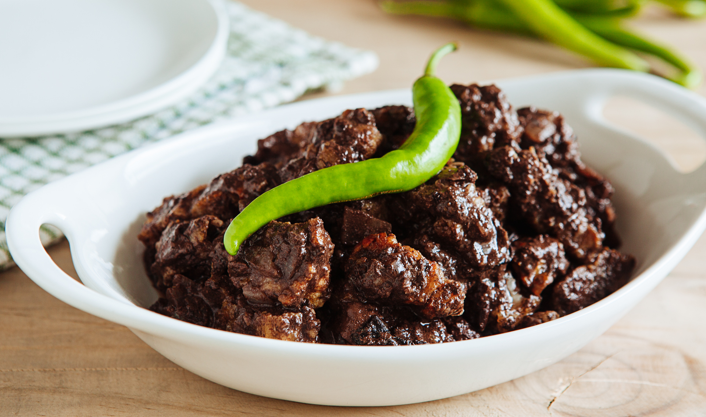

|

|
Description
Dinuguan is a Filipino savory stew usually of pork offal and/or meat simmered in a rich, spicy dark gravy of pig blood, garlic, chili, and vinegar
Ingredients
10 ounces pork blood
1 cup vinegar
1 tablespoon canola oil
1 onion, peeled and chopped
4 cloves garlic, peeled and minced
1 thumb-size ginger (about 1 tablespoon), peeled and minced
2 pounds pork belly, cut into 1/2-inch strips
1 tablespoon fish sauce
1 cup water
1 tablespoon brown sugar
2 finger chilies (siling haba)
salt and pepper to taste
Procedure
1.In a bowl, combine pig's blood and about 2 tablespoons of the vinegar. Stir well.
2. In a pot over medium heat, heat oil. Add onions, garlic, and ginger and cook until softened.
3. Add pork and cook, stirring occasionally, until lightly browned.
4. Add fish sauce and cook for about 1 to 2 minutes.
5. Add vinegar and bring to a boil. Cook, uncovered and without stirring, for about 3 to 5 minutes or until slightly reduced.
6. Add water and bring to a boil. Lower heat, cover and continue to cook for about 15 to 20 minutes or until meat is tender.
7. Add pork blood, stirring to disperse and prevent lumps.
8. Add brown sugar and stir to dissolve.
9. Add chili peppers.
10. Continue to simmer for about 10 minutes or until sauce is thickened.
11. Season with salt and pepper to taste. Serve hot with rice or puto.
Price
P50 / serving
|